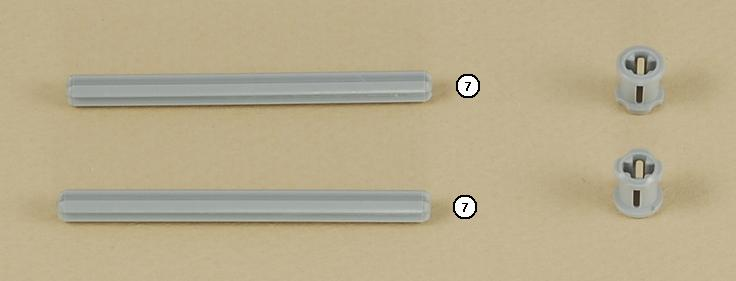
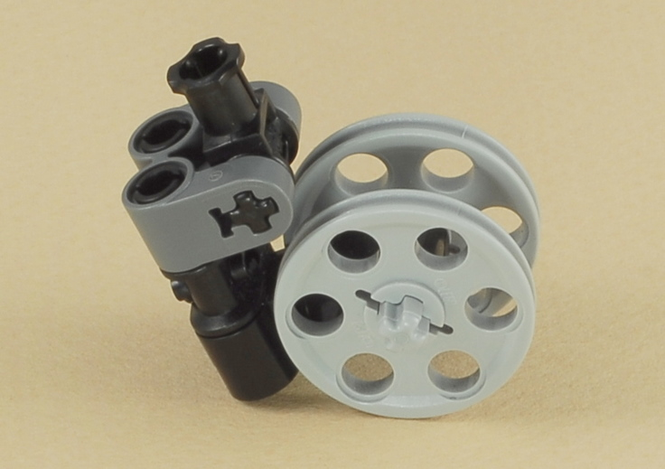

Fun Projects for your LEGO� MINDSTORMS� NXT!
|
|
Fun Projects for your LEGO� MINDSTORMS� NXT! |
| Castor Bot |
|

1
2


3
4

5

6
7


8

9


10

11
| Use two medium length wires to connect the two drive
motors to ports B and C on the NXT.
Important: Keep the left wire on the left and the right wire on the right (do not cross the wires). |

|
Building Tip: Weight Balance When building a robot with a castor wheel, it is important to consider the weight balance of the robot. For good turning, you want to have most of the robot's weight over the drive wheels, if possible. But there must also be enough weight over the castor to keep the robot stable and avoid tipping over. If too much weight is over the castor, the robot may struggle to turn, might get caught up and stall, or the drive wheels might start slipping. However, if too much weight is over the drive wheels, the robot may pop a wheelie if driven with a lot of power with the drive wheels in the back (see the Dragster). As determined by the experiment below with a small scale, this Castor Bot robot has a total weight of 600 grams, with 388 grams over the drive wheels. This works out to 65% (388/600) of the weight over the drive wheels.
|
| Castor
Bot Programming The Castor Bot is a basic two-motor drive robot with sturdy construction that turns easily. You can use it as a starting point for your own projects, and program it however you want. To get started, you could try the "NXT Program" feature of the NXT brick to select some simple movements using the buttons on the NXT brick. |
Challenges
|
|
Copyright
�
2007-2009 by Dave Parker. All rights reserved. |